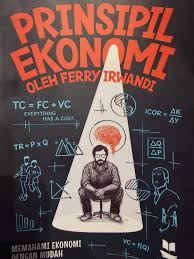

Buku Prinsipil Ekonomi menjelaskan konsep ekonomi dengan cara yang sederhana dan mudah dipahami. Melalui berbagai contoh kehidupan sehari-hari, buku ini membantu pembaca memahami bagaimana cara mengambil keputusan yang bijak dalam mengelola uang, waktu, dan sumber daya. Buku ini cocok untuk pelajar yang ingin memahami dasar-dasar ekonomi dengan pendekatan yang ringan dan relevan dengan kehidupan modern.